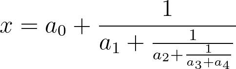

LaTeX equation to PNG
A short script to convert LaTeX equations to png files.
import shutil
import urllib
import requests
def get_image(latex_equation, file_format="png"):
url_base = (
"https://latex.codecogs.com/"
+ file_format
+ ".latex?"
+ urllib.parse.quote("\\dpi{300} " + "\\bg_white ")
)
url = url_base + urllib.parse.quote(latex_equation)
r = requests.get(url, stream=True)
if r.status_code == 200:
with open("equation.{}".format(file_format), "wb") as f:
r.raw.decode_content = True
shutil.copyfileobj(r.raw, f)
return None
if __name__ == "__main__":
print("Creating example equation")
get_image(r"x = a_0 + \frac{1}{a_1 + \frac{1}{a_2 + \frac{1}{a_3 + a_4}}}")
